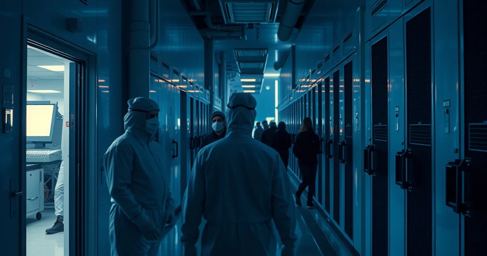
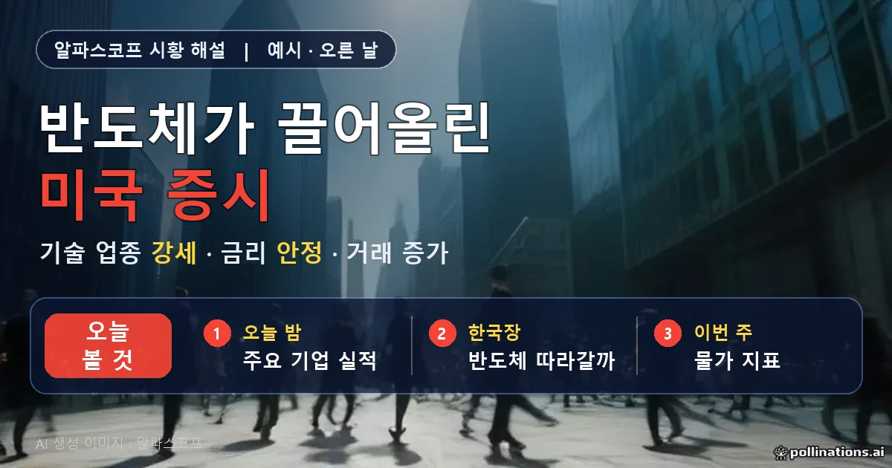
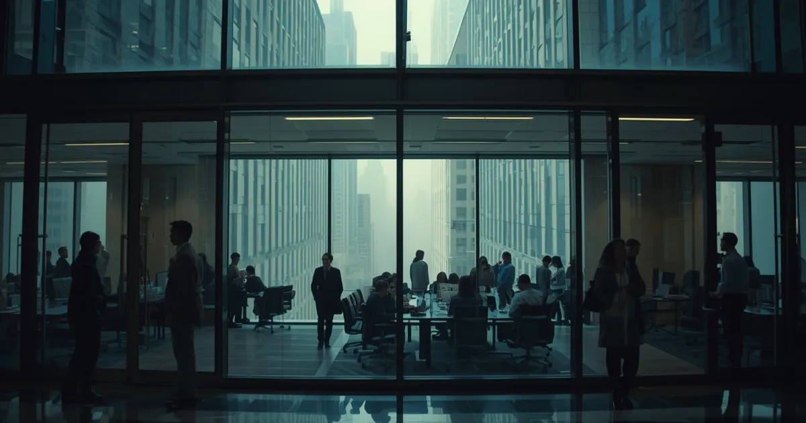
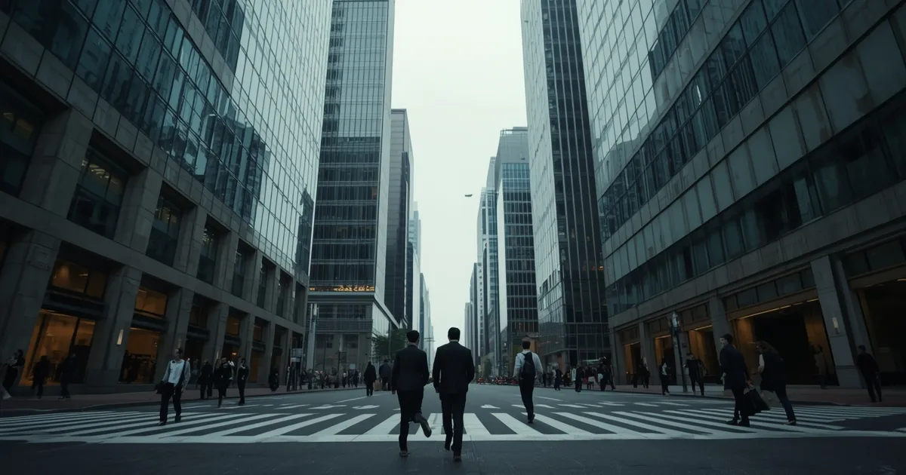

시황 배너 — 모델 비교
같은 장면 설명 · 같은 글자 틀. Pollinations = 앞 목업(워터마크 · 45초 제한), Workers AI 두 모델 = 2026-11-17 banner-cf-test 실행(12장 모두 성공).
FLUX schnell 은 정사각 1024 를 위아래 잘라 1200×630, Lucid Origin 은 1200×630 그대로.
| Pollinations (목업용) | Workers AI · FLUX schnell | Workers AI · Lucid Origin | |
|---|---|---|---|
| 11월 17일 아침 · 기술주 내림 뒤, 오늘 밤 엔비디아 실적 글자 얹음 | 53KB | 68KB | 59KB |
| 11월 17일 아침 · 기술주 내림 뒤, 오늘 밤 엔비디아 실적 tech · plunge | 22KB |  45KB · 3.0초 | 35KB · 3.3초 |
| (예시) 크게 오른 날 글자 얹음 |  55KB | 77KB | 96KB |
| (예시) 크게 오른 날 finance · strong_up | 29KB | 63KB · 2.3초 | 87KB · 2.9초 |
| (예시) 방향 못 정한 날 corporate · uncertain | 19KB | 40KB · 2.8초 |  41KB · 14.2초 |
| (예시) 급락한 날 · 도시 city · plunge |  21KB | 55KB · 2.9초 | 46KB · 9.7초 |
| (예시) 반등한 날 · 물류 logistics · rebound |  18KB | 67KB · 3.1초 | 54KB · 5.6초 |
| (예시) 저녁판 · 한국 마감 finance · mild |  21KB | 63KB · 3.2초 |  70KB · 5.6초 |